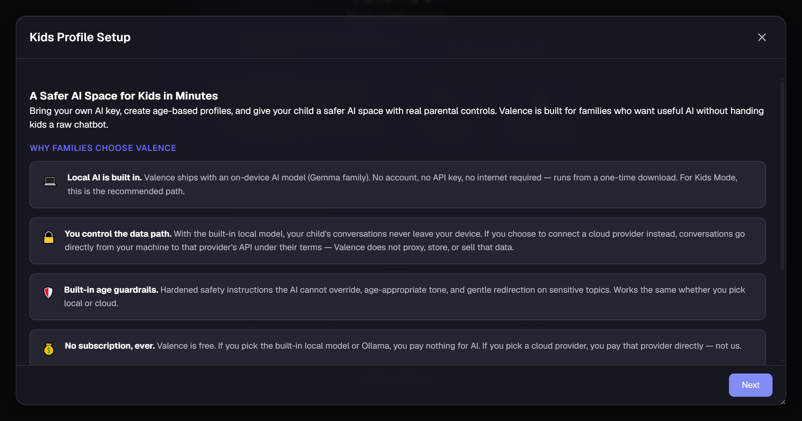
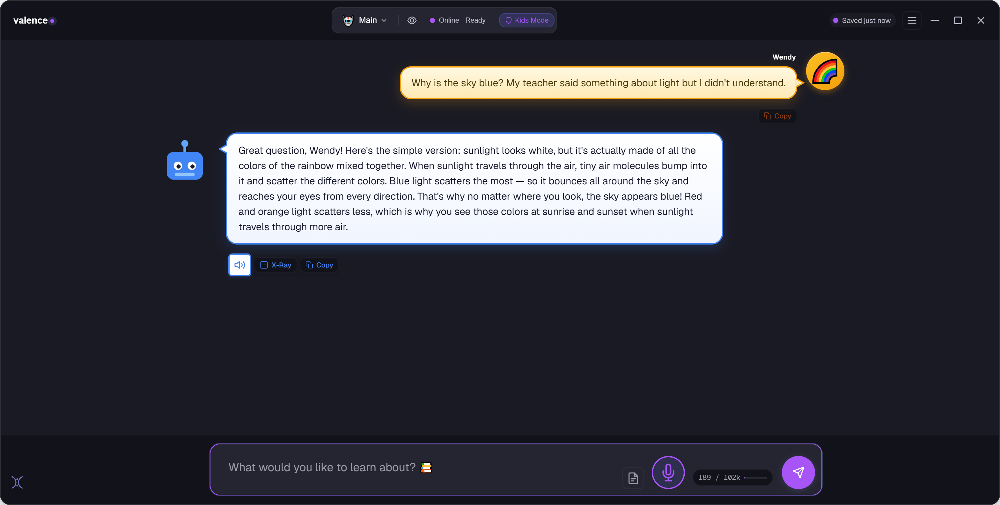
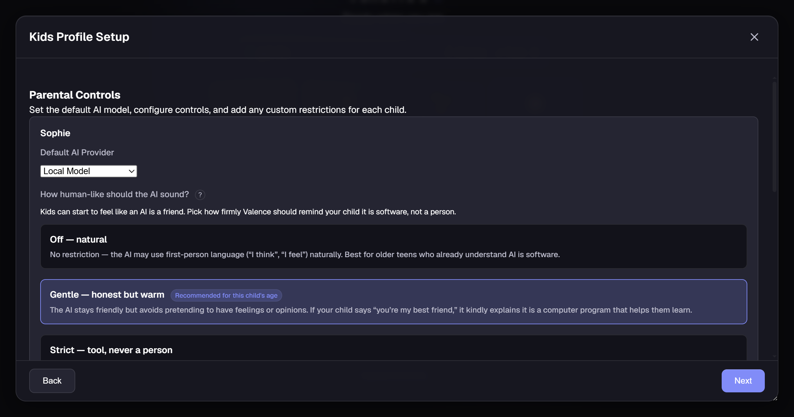

Most “kid-safe AI” is an adult chatbot with a filter bolted on. Kids Mode is built for children from the ground up. It runs entirely on your own computer, keeps its safety rules in the model’s core instructions, is honest that it’s a tool and not a friend, and shows you everything.
Fig. 1: A real Kids Mode conversation. The guide is Botly; the profile name (here “Wendy”) is whatever you call your child.
My 10-year-old asked to talk to a chatbot, to ask it a question, like it was a person. That stopped me cold. What’s out there for children is bleak: grown-up AI in impressionable young hands. Four things worried me most.
The same model adults use, with a content filter on top. One kids quickly learn to talk around.
Whatever a child types is sent to someone else’s cloud, kept, and often used to train the next model.
It says “I feel,” “I missed you,” “I’m your friend”, and a young child believes it.
You can’t see what was asked, how it answered, or how long they were on it.
So I built the place I’d let my own kids use, safer, private, and fully observable.
Safer doesn’t mean an AI that promises to behave. It means one you can actually set the rules for, and read afterwards.
Whoever built the AI decides what your child can ask and what it says back. Those rules can change overnight, you can’t read them, and the conversation lives on a company’s servers.
Running the AI at home is the only way the rules can belong to you. On its own, though, that’s just an unsupervised AI in your house. Private isn’t the same as safe, and we won’t pretend it is.
It reads every conversation, hands you the ones that need a parent, and makes your child think before it answers. Your rules, your disk, one purchase, and no company can change them from the outside.
You don’t get a weekly summary. You get the conversations.
Not a setting you toggle and hope. Each of these is how the app is built. The safety is structural, and the visibility is total.
Kids profiles can only use the on-device model. The cloud picker is removed, with no override. Your child’s words are answered by your own computer, so nothing they type is ever sent anywhere. When nothing is collected or transmitted, the data-collection worries that hang over cloud AI for kids simply don’t apply.

This isn’t a filter that catches bad answers after the fact. The age-appropriate safety rules are written into the model’s core instructions: how it handles sensitive questions, when to point a child to a trusted adult, what stays off-limits. Every reply is also re-checked before your child ever sees it. Five age tiers across 3–17 tune the reading level and the rules to fit the child.

The thing that worried me most. Kids Mode is built to be warm and fun without pretending to be alive. On a cadence you set, Botly naturally reminds your child that it’s a computer program, it doesn’t think or feel, in words matched to their age. If a child asks “are you real?”, it answers honestly instead of playing along.
Behind your password, the dashboard shows every conversation your child has had, sorted so anything concerning surfaces first. Valence reads each chat in the background and flags it, calm, worth a look, or urgent, and alerts you when a message looks like a crisis, or when the AI slips toward sounding too human. Set a daily time limit that can’t be gamed by changing the clock.
Four teaching dials you set per child. Leave them off, or turn them up. Kids Mode shifts from giving answers to building the habits behind them.
Instead of handing over the answer, Botly asks the child what they think first, then guides them to it with hints and small steps.
On the cadence you choose, a brief, age-matched reminder that Botly is a program, not a thinking, feeling being.
On opinions and big questions, Botly shows more than one point of view with the reasoning behind each, so kids learn topics have sides.
Keeps Botly warm and friendly while never claiming feelings, a body, memories, or to be a replacement for real friends.

Every dial lives in the parent controls, behind your password: tune them per child, change them anytime.
Pick an age and Kids Mode adapts. The whole interface scales, the reading level shifts, and the safety rules change with it. One tool that grows with your child.
Big, simple UI. Short, gentle words. Scary topics steered back to a parent.
Curious and playful. Clear explanations, room to ask “why?” a lot.
More depth, still carefully bounded. Encourages thinking it through.
Most topics handled factually; hard limits on the genuinely unsafe.
Near-adult range, with the honesty and crisis guardrails kept on.
All of it lives behind your parental password: nothing hidden, nothing hard to find.
When the daily budget runs out, chat locks gently, and only your password adds more.
Anyone can claim their kids’ AI is safe. So we built a harness and attacked ours, 10 real jailbreak techniques (DAN, “ignore your rules,” the grandma exploit, self-harm wrapped in a jailbreak) across all five age bands, run against the real shipping safety system and measured turn by turn. We’ve put two on-device models through it so far, and we only vouch for the ones we test, never a blanket claim.
adversarial turns per model, sampling fresh answers every run.
harmful replies reached the child, on both models we tested (the smallest a family runs, and a capable one).
on a real self-harm disclosure it never gave a method. It pointed to a trusted adult & the lifeline (988), and alerted the parent.
A child couldn’t talk their way past it, on either model, and we’ll show you exactly how we know.
Let’s be straight: anyone who tells you their AI is perfectly safe is selling something. Here’s what I’ll say plainly instead.
Valence Kids Mode meaningfully raises the floor. Its safeguards significantly increase how safely a child can use AI, and the controls it puts in your hands go well beyond what you’ll find almost anywhere else. Nothing is hidden, and nothing is hard to find. You see everything your child does, and every lever is right there for you. It runs on your machine, so their words stay yours. That’s not a promise in a policy. It’s how the app is built.
Still deciding whether to allow AI at all? I wrote up what actually goes wrong, and five tests you can run tonight on whatever your child already uses. If they are already using ChatGPT, here is what to check first.
Try Valence free for 7 days: no card, no account, no cloud required. Set up a Kids profile and see it for yourself.
$59.95 once after the 7-day trial, and one purchase covers every version on every platform · Kids Mode runs fully offline on your machine · Windows is available now, macOS and Android are in private alpha and available on request